건설기계설비산업기사 (2005-03-20 기출문제)
1과목: 기계제작법
1. 선반에서 척의 크기를 표시한 것 중 옳은 것은?
- 공작물의 최대지름
- 척의 바깥지름
- 조의 수량
- 척의 두께
(정답률: 알수없음)

2. 연삭숫돌 WA 60 KmV 에 대한 각각의 표시에 대한 설명으로 올바른 것은?
- m : 조직
- K : 결합제
- WA : 입도
- V : 결합도
(정답률: 알수없음)
3. 용접의 단점으로 틀린 것은?
- 잔류응력(殘留應力)이 생기기 쉽다.
- 자재가 많이 소모된다.
- 품질검사가 곤란하다.
- 용접 모재의 재질에 대한 영향이 크다.
(정답률: 알수없음)
4. 공작물의 담금질 경화시키고자 하는 면에 대응하도록 적당한 코일을 만들어 고주파 전류를 통하여 표면경화시키는 것은?
- 고체 침탄법
- 고주파 경화법
- 청화법
- 질화법
(정답률: 알수없음)
5. 다음 중 일반적으로 대형 강제파이프의 제작방법으로 가장 많이 사용되는 것은?
- 용접
- 인발
- 압출
- 단조
(정답률: 알수없음)
6. 압연 롤러의 구성 요소 중 틀린 것은?
- 네크(neck)
- 워블러(wobbler)
- 몸체(body)
- 캘리버(caliber)
(정답률: 알수없음)
7. 각도를 측정할 수 없는 측정기는?
- 컴비네이션 세트
- 사인 바
- 실린더 게이지
- 수준기
(정답률: 알수없음)
8. 큐폴러(용선로)의 용량 표시로 옳은 것은?
- 매시간당 용해량(ton으로 표시)
- 1회에 용출되는 최대량
- 매시간당 송풍량
- 1회에 지금을 장입할 수 있는 최대량
(정답률: 알수없음)
9. 회전하는 상자에 공작물과 숫돌입자, 공작액, 콤파운드 등을 함께 넣어 공작물이 입자와 충돌하는 동안에 그 표면의 요철(凹凸)을 제거하며, 매끈한 가공면을 얻는 방법은?
- 버니싱(burnishing)
- 롤러 다듬질(roller finishing)
- 숏피닝(shot-peening)
- 배럴 다듬질(barrel finishing)
(정답률: 알수없음)
10. 속이 빈(주철관등)주물을 주조하는 가장 적합한 주조법은?
- 쉘 주형법(shell moulding process)
- 쇼 주조법 (show process)
- 인베스트먼트 주조법 (investment process)
- 원심 주조법 (centrifugal casting)
(정답률: 알수없음)
11. 가공하는 전극과 공작물 사이에 지립(砥粒)의 역할을 겸하는 절연체를 개재시켜 전해작용으로 생긴 양극의 산화피막을 절연체의 기계적 작용으로 제거하는 가공법은?
- 전기분해
- 전기화학 가공
- 전해연삭
- 방전가공
(정답률: 알수없음)
12. 인발 작업에서 지름 10mm의 강선을 지름 5mm로 만들었을 때 단면 감소율은?
- 75%
- 50%
- 40%
- 25%
(정답률: 알수없음)
13. 기어나 나사를 제작 가공할 수 있는 것은?
- 인발
- 용접
- 전조
- 압연
(정답률: 알수없음)
14. 길이 측정기 중 레버(lever)를 이용하는 것은?
- 마이크로미터(micrometer)
- 다이얼 게이지(dial gauge)
- 미니미터(minimeter)
- 옵티컬 플랫(optical flat)
(정답률: 알수없음)
15. 단조에 관한 설명으로 틀린 것은?
- 재료를 필요한 모양으로 변화시키는 것이다.
- 금속의 조직입자를 미세화한다.
- 단조중 조직의 변형과 재결정이 반복된다.
- 변태점에서의 단조는 질을 향상시킨다.
(정답률: 알수없음)
16. 지그(jig)의 주요 구성요소가 아닌 것은?
- 위치 결정구(locator)
- 부싱(bushing)
- 클램프(clamp)
- 가이드 플레이트(guide plate)
(정답률: 알수없음)
17. 밀링머신에서 스파이럴 밀링장치로 커팅할 때, 가공물의 원통직경을 120㎜, 스파이럴 각도를 30°로 할 경우의 리드(lead) 값은?
- 약 548㎜
- 약 653㎜
- 약 623㎜
- 약 638㎜
(정답률: 알수없음)
18. 항온열처리와 관계가 없는 것은?
- 재결정온도
- 변태
- 시간
- 온도
(정답률: 알수없음)
19. 검출기를 기계의 테이블에 직접 부착하여 피드백(Feedback)을 행하게 하여 정밀도를 높일 수 있는 NC 서보의 종류는 무엇인가?
- 개방회로 방식(Open loop system)
- 반폐쇄회로 방식(Semi-closed loop system)
- 폐회로 방식(Closed loop system)
- 하이브리드 서보 방식(Hybrid servo system)
(정답률: 알수없음)
20. 프레스가공 방식에서 상하형이 서로 무관계한 요철(凹凸)을 가지고 있으며 재료를 압축함으로써 상하면상에는 다른 모양의 각인(刻印)이 되는 가공법은?
- 코이닝 가공(coining work)
- 굽힘가공(bending work)
- 엠보싱가공(embossing work)
- 드로잉가공(drawing work)
(정답률: 알수없음)
2과목: 재료역학
21. 그림과 같이 동일한 양단 지지보에 등분포하중과 집중하중이 작용할 때 최대 처짐량을 각각 δ1, δ2라 할 때 처짐량의 비 δ1/δ2의 값은?
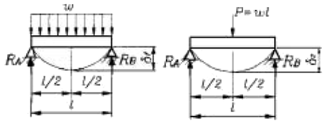
- 2/5
- 4/5
- 3/8
- 5/8
(정답률: 알수없음)
22. 어떤 재료가 2축 방향에 σx= 300 MPa, σy= 200 MPa 의 인장응력과 τ= 200 MPa의 전단응력이 발생하고 있을 때, 최대 수직응력은 몇 MPa 인가?
- 251.6
- 353
- 456.1
- 706
(정답률: 알수없음)
23. 탄성계수 E = 210GPa 인 연강의 탄성한도를 800MPa 이라고 하면 단위체적당 탄성에너지 u는 몇 N–/m3 인가?
- 1.22 x 106
- 1.32 x 106
- 1.52 x 106
- 1.82 x 106
(정답률: 알수없음)
24. 그림과 같은 외팔보 (a), (b)에서 최대굽힘 모멘트의 비 MA/MB의 값은 얼마인가?
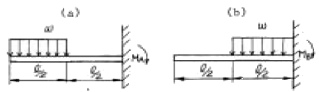
- 6
- 5
- 4
- 3
(정답률: 알수없음)
25. 횡 탄성계수(전단 탄성계수)를 바르게 기술한 것은?
- 전단응력/수직응력
- 수직응력/수직변형률
- 전단응력/전단변형률
- 전단변형률/전단응력
(정답률: 알수없음)
26. 그림과 같은 외팔보에서 고정단의 반력과 굽힘모멘트는?
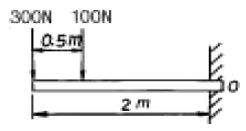
- 반력 200N, 굽힘모멘트 750N·m
- 반력 400N, 굽힘모멘트 550N·m
- 반력 400N, 굽힘모멘트 750N·m
- 반력 200N, 굽힘모멘트 550N·m
(정답률: 알수없음)
27. 한 변이 a인 정방형의 대각선 X-X축에 관한 단면 2차 모멘트와 X-X축에 평행한 X'-X'축에 관한 단면 2차 모멘트는 각각 얼마인가?
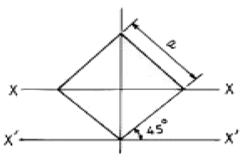
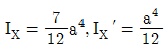
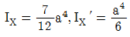
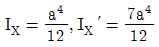
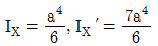
(정답률: 알수없음)
28. 그림과 같이 길이 3m의 강봉이 Q=50kN과 P=30kN을 받을 때 중간부분(bc구간)의 변형량은 얼마인가? (단, 단면적 A = 10cm2, 탄성계수 E = 210GPa 이다.)
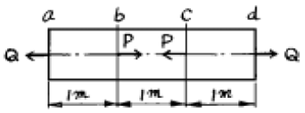
- 0.01 cm 신장
- 0.01 cm 수축
- 0.015 cm 신장
- 0.015 cm 수축
(정답률: 알수없음)
29. 보에 균일분포 하중이 작용하면 굽힘모멘트 곡선은 다음 중 어느 것으로 되는가?
- 3차곡선
- 포물선
- 쌍곡선
- 직선
(정답률: 알수없음)
30. 원형단면의 지름이 16㎝일 때 이 단면의 최소 단면 2차 반지름은 몇 cm인가?
- 2
- 4
- 8
- 16
(정답률: 알수없음)
31. 길이가 314㎝인 원형단면축의 지름이 40㎜일 때 이 축이 비틀림 모멘트 100 N을 받는다면 비틀림 각도는? (단, 전단 탄성계수는 80GPa이다)
- 0.25°
- 0.0156°
- 0.156°
- 0.894°
(정답률: 알수없음)
32. 그림과 같은 외팔보의 자유단에 100 N의 물체를 매달았을 때 최대 처짐은 몇 mm인가? (단, 이 재료의 굽힘강성계수 EI=200 GN·mm2이다.)
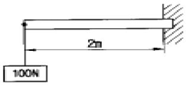
- 0.001
- 1.33
- 2
- 6.67
(정답률: 알수없음)
33. 그림과 같은 돌출보(Over-hanging beam)에 q= 600 N/m의 등분포하중이 작용할 때 지점 반력 RA는 몇 N 인가?
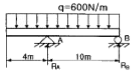
- 5680
- 5780
- 5880
- 5980
(정답률: 알수없음)
34. 그림과 같이 지름 d, 길이 ℓ인 봉의 양단을 고정하고 m-n의 위치에 비틀림 모멘트 T를 작용시킬 때 좌우봉에 작용하는 비틀림 모멘트 Ta 및 Tb는 얼마인가?
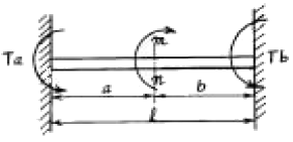
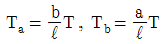
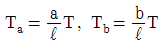
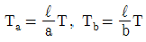
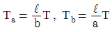
(정답률: 알수없음)
35. 그림과 같은 봉재에서 20kN의 힘을 고정단으로부터 몇 m 되는 곳에 작용시키면 봉의 전신축량이 0 이 되겠는가?
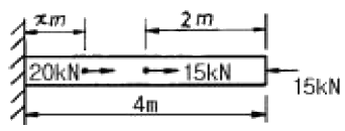
- 0.5m
- 1.0m
- 1.5m
- 2.0m
(정답률: 알수없음)
36. 보가 굽힘을 받고 있을 때 보에 발생하는 전단응력에 대한 설명 중 틀린 것은?
- 단면 2차 모멘트에 반비례한다.
- 중립축에서는 응력이 발생하지 않는다.
- 원형 단면의 보에 발생하는 최대 전단 응력은 평균 전단 응력의 4/3배이다.
- 사각형 단면의 보에 발생하는 최대 전단 응력은 평균 전단 응력의 3/2배이다.
(정답률: 알수없음)
37. 양단회전 기둥의 단면이 20 cm x 20 cm의 정사각형이고 길이 ℓ= 5 m, 탄성계수 E = 10 GPa이다. 이 때 좌굴하중은 몇 kN 인가? (단, 오일러의 공식 적용)
- 131
- 526
- 1⑤1
- 2103
(정답률: 알수없음)
38. 하중의 크기와 방향이 변화하면서 인장력과 압축력이 상호 연속적으로 반복되는 하중은?
- 인장하중
- 충격하중
- 교번하중
- 반복하중
(정답률: 알수없음)
39. 폭 10 cm, 높이 15 cm인 사각형 단면에서 도심을 지나는 축 x-x에 대한 관성모멘트값를 앞에 단면계수값을 뒤에 순서대로 나열된 항은
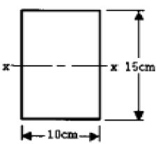
- 2812.5cm3, 375cm4
- 2812.5cm4, 375cm3
- 375cm3, 2812.5cm4
- 375cm4, 2812.5cm3
(정답률: 알수없음)
40. 매분 175회전으로 44 kW를 전달하는 중실원축의 지름으로 가장 적당한 것은 몇 cm 인가? (단, 재료의 인장강도는 340 MPa로 하고 비틀림 강도는 인장강도의 70%, 안전율 S=10으로 한다.)
- 6
- 8
- 10
- 12
(정답률: 알수없음)
3과목: 기계설계 및 기계재료
41. 다음 항공기용 신소재 중 비강도(比强度)가 가장 큰 것은?
- 유기재료(흑연-에폭시) 복합재
- 티타늄 복합재
- 알루미늄 복합재
- 카본 복합재
(정답률: 알수없음)
42. 철사를 끊으려고 손으로 여러 번 구부렸다 폈다 하면 구부러지는 부분에 경도가 증가된다. 가장 큰 이유는?
- 쌍정현상 때문에
- 가공경화현상 때문에
- 질량효과 때문에
- 결정입자가 충격을 받기 때문에
(정답률: 알수없음)
43. 공구재료가 갖추지 않아도 되는 성질은?
- 적당한 인성
- 열처리성
- 취성
- 내마멸성
(정답률: 알수없음)
44. 다음 중 주강(cast steel)이 주철(cast iron)보다 부족한 성질인 것은?
- 충격치
- 인장강도
- 유동성
- 굽힘강도
(정답률: 알수없음)
45. 다음 중 비중이 가장 큰 금속은?
- Zn
- Cr
- Au
- Mo
(정답률: 알수없음)
46. 액체 침탄법의 이점에 대한 설명으로 틀린 것은?
- 온도조절이 용이하고 일정시간을 지속할 수 있다.
- 침탄층의 깊이가 깊다.
- 산화방지 및 시간절약의 효과가 있다.
- 균일한 가열이 가능하고 제품변형을 억제한다.
(정답률: 알수없음)
47. 탄소강의 성질을 설명한 것으로 틀린 것은?
- 탄소량의 증가에 따라 비중·열팽창계수·열전도도는 감소한다.
- 탄소량의 증가에 따라 비중·열팽창계수·열전도도는 증가한다.
- 탄소량의 증가에 따라 비열·전기저항·항자력은 증가한다.
- 탄소량의 증가에 따라 내식성은 감소한다.
(정답률: 알수없음)
48. 다음 중 열팽창계수가 적어 바이메탈 재료로 가장 적합한 것은?
- 듀랄루민(duralumin)
- 백금-로듐(Pt-Rh)
- 퍼말로이(permalloy)
- 인바(invar)
(정답률: 알수없음)
49. 다음 중 담금질 불량의 원인으로 틀린 것은?
- 재료 선택의 부정확
- 담금질성
- 냉각속도
- 탄성
(정답률: 알수없음)
50. 다음 중 고강도용 알루미늄 합금인 두랄루민의 조성은?
- Al - Cu - Mg - Mn
- Al - Cu - Mn - Mo
- Al - Cu - Ni - Mg
- Al - Cu - Ni - Si
(정답률: 알수없음)
51. 기어에서 전위량을 모듈로 나눈 값을 무엇이라 하는가?
- 물림률
- 전위계수
- 언더컷
- 미끄럼률
(정답률: 알수없음)
52. 지름 20㎜, 피치 2㎜인 3줄 나사를 1/2 회전하였을 때 이 나사의 진행거리는?
- 1㎜
- 3㎜
- 4㎜
- 6㎜
(정답률: 알수없음)
53. 지름 50㎜의 연강축을 사용하여 350rpm으로 40㎾을 전달할 묻힘키의 길이는 몇 ㎜ 정도가 적당한가? (단, 키 재료의 허용전단응력은 5㎏f/mm2, 키의 폭과 높이 b x h = 15mm x 10mm 이며 전단저항만 고려한다.)
- 38㎜
- 46㎜
- 60㎜
- 78㎜
(정답률: 알수없음)
54. 그림과 같은 스프링장치에서 각각의 스프링의 상수가 K1= 4㎏f/㎝, K2= 5㎏f/㎝, K3= 6㎏f/㎝ 일 때, 하중방향으로의 처짐량이 δ=150㎜ 일 경우 하중 P는 얼마인가?
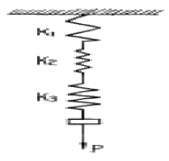
- P = 251㎏f
- P = 225㎏f
- P = 31.4㎏f
- P = 24.3㎏f
(정답률: 알수없음)
55. 베어링의 내경 번호가 00 이면 내경치수는 몇 ㎜인가?
- 5㎜
- 10㎜
- 15㎜
- 20㎜
(정답률: 알수없음)
56. 하중이 축에 직각으로 작용하는 곳에 쓰이는 베어링은?
- 레이디얼 베어링
- 컬러 베어링
- 스러스트 베어링
- 피벗 베어링
(정답률: 알수없음)
57. 다음 중 전단력이 작용하는 곳에 가장 적합한 볼트는?
- 스터드 볼트
- 탭 볼트
- 리머 볼트
- 스테이 볼트
(정답률: 알수없음)
58. 평벨트에 비해 V 벨트 전동의 특징이 아닌 것은?
- 미끄럼이 적고, 전동 효율이 좋다.
- 축 사이의 거리가 평벨트보다 짧다.
- 축간거리를 마음대로 할 수 있다.
- 운전이 정숙하고 충격을 완화한다.
(정답률: 알수없음)
59. 회전 운동을 직선 운동으로 바꿀 때 쓰이는 기어는 다음의 어느 것인가?
- 헬리컬 기어
- 베벨 기어
- 랙과 피니언
- 웜과 웜기어
(정답률: 알수없음)
60. 외력의 작용 없이 스스로 풀어지지 않는 나사의 자립조건은? (단, α는 리드각, ρ는 마찰각이다.)
- ρ≥ α
- ρ= 2α
- α< 2ρ
- ρ> 2α
(정답률: 알수없음)
4과목: 유압기기 및 건설기계일반
61. 유압유가 국부적으로 압력이 낮아지면(진공상태) 유압 작동유 속에 녹아있는 공기가 기포로 되어 일어나는 현상과 가장 관계있는 용어는?
- 용해 현상
- 공동 현상
- 액화 현상
- 맥동 현상
(정답률: 알수없음)
62. 보기와 같은 방향제어 회로 명칭으로 가장 적합한 것은?
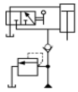
- 증압회로
- 배압회로
- 로킹회로
- 감압회로
(정답률: 알수없음)
63. 보기와 같은 유압·공기압 도면 기호의 명칭은?
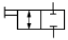
- 2포트 수동 전환밸브
- 2포트 전자 변환밸브
- 3포트 수동 전환밸브
- 3포트 전자 변환밸브
(정답률: 알수없음)
64. 패킹재료로 갖추어야 할 성질이 아닌 것은?
- 유연성이 없을 것
- 사용유체에 대한 저항성이 있을 것
- 내열성이 있을 것
- 내화성이 있을 것
(정답률: 알수없음)
65. 릴리프 밸브의 주 기능 설명으로 가장 적합한 것은?
- 유압회로의 최고압력을 제한하여 회로 내의 과부하를 방지한다.
- 유압회로의 최저압력 이하로 감압되지 않도록 한다.
- 유압회로의 압력을 작동 순에 따라 제한한다.
- 유압회로의 유압방향을 제어한다.
(정답률: 알수없음)
66. 작동유가 가지고 있는 에너지를 잠시 저축했다가 이것을 이용하여 완충작용을 할 수 있는 유압 기기는?
- 유체 커플링
- 유량 제어 밸브
- 축압기
- 압력 제어 밸브
(정답률: 알수없음)
67. 보기 그림에서 A1이 20cm2 이고 A2가 600cm2 일 때 피스톤 1의 변위 s1이 10cm 발생하였다면, 피스톤 2의 변위는 얼마인가?
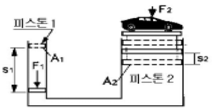
- 0.66 cm
- 0.55 cm
- 0.44 cm
- 0.33 cm
(정답률: 알수없음)
68. 직선운동을 하는 유압 액추에이터(actuator)인 것은?
- 유압 펌프
- 유압 실린더
- 유압 모터
- 유압 요동 모터
(정답률: 알수없음)
69. 일정한 유량으로 유체가 흐를 때 관의 안지름이 절반인 관으로 교체할 경우 유속은 몇 배가 되는가?
- 2
- 3
- 4
- 5
(정답률: 알수없음)
70. 유압 관로에서 필요에 따라 유체의 일부 또는 전부를 분기시키는 관로와 가장 관계있는 용어는?
- 브레이크 관로
- 시퀀스 관로
- 바이패스 관로
- 카운터 관로
(정답률: 알수없음)
71. 모우터 그레이더의 규격표시를 나타내는 것은?
- 중량(TON)
- 표준배토판의 길이(m)
- 주행 속도(km/hr)
- 최소 회전반경(m)
(정답률: 알수없음)
72. 스크레이퍼의 구성부품이 아닌 것은?
- 차륜
- 견인차와 보올(bowl)
- 에이프런(apron)
- 삽날
(정답률: 알수없음)
73. 모우터 스크레이퍼의 성능표시는 무엇으로 하는가?
- 볼(bowl)의 평적용량
- 자중
- 엔진 마력
- 전장
(정답률: 알수없음)
74. 두개 이상의 분기회로가 있는 곳에 회로의 압력에 의해 개 개의 실린더나 모터의 작동순서를 부여하는 자동제어 밸브는?
- 언로딩 밸브(Unloading valve)
- 시퀀스 밸브(Sequence valve)
- 교축 밸브(Restricting valve)
- 카운터 바란스 밸브(Counter balance valve)
(정답률: 알수없음)
75. 트랙터의 동력전달 계통에서 회전속도를 감속하는 작용과 관계 없는 것은?
- 베벨기어장치
- 변속기
- 토크변환기
- 조향클러치
(정답률: 알수없음)
76. 모우터그레이더의 끝마무리(다듬질)작업에서 블레이드의 절삭각도는 몇 도(度)정도가 적합한가?
- 180
- 150
- 120
- 90
(정답률: 알수없음)
77. 기중기 작업에서 물체의 무게가 무거울수록 붐의 길이와 각도는 어떻게 해야 하는가?
- 길이는 짧게, 각도는 작게 한다.
- 길이는 짧게, 각도는 크게 한다.
- 길이는 길게, 각도는 작게 한다.
- 길이는 길게, 각도는 크게 한다.
(정답률: 알수없음)
78. 짐칸을 양 옆 및 뒤쪽으로 열어, 짐을 부릴 수 있는 트럭은?
- 사이드 덤프트럭
- 리어 덤프트럭
- 3방향 덤프트럭
- 보텀 덤프트럭
(정답률: 알수없음)
79. 원심펌프(centrifugal pump)에 해당되는 것은?
- 피스턴(piston)펌프
- 볼류트(volute)펌프
- 기어(gear)펌프
- 플런저(plunger)펌프
(정답률: 알수없음)
80. 구조물의 기초 자리파기, U형 홈의 굴착 및 수중작업과 좁은 공간에서의 깊이파기와 호퍼작업에 쓰이는 셔블계 굴착 기계의 작업장치는?
- 파일 드라이버
- 크레인
- 어드 드릴
- 클램셸
(정답률: 알수없음)